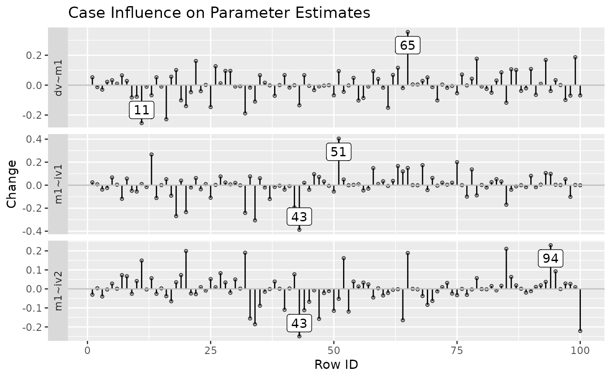
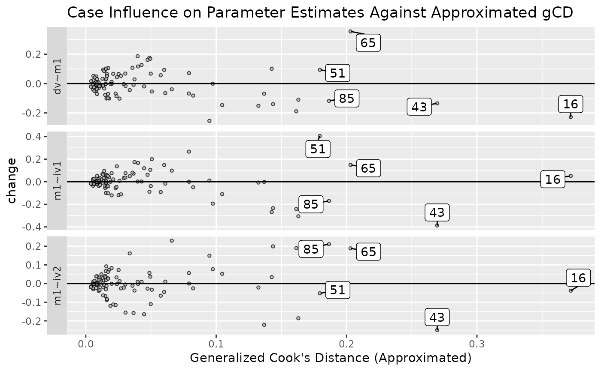

Gets the output of
functions such as est_change() and
est_change_approx() and plots case
influence on selected parameters.
Usage
est_change_plot(
change,
parameters,
cutoff_change = NULL,
largest_change = 1,
title = TRUE,
point_aes = list(),
vline_aes = list(),
hline_aes = list(),
cutoff_line_aes = list(),
case_label_aes = list(),
wrap_aes = list()
)
est_change_gcd_plot(
change,
parameters,
cutoff_gcd = NULL,
largest_gcd = 1,
cutoff_change = NULL,
largest_change = 1,
title = TRUE,
point_aes = list(),
hline_aes = list(),
cutoff_line_aes = list(),
case_label_aes = list(),
wrap_aes = list()
)Arguments
- change
The output from
est_change(),est_change_raw(),est_change_approx(), orest_change_raw_approx().- parameters
If it is a character vector, it specifies the selected parameters. Each parameter is named as in
lavaansyntax, e.g.,x ~ yorx ~~ y, as appeared in the columnslhs,op, andrhsin the output oflavaan::parameterEstimates(). Supports specifying an operator to select all parameters with this operators:~,~~,=~, and~1. This vector can contain both parameter names and operators. If it is a numeric vector, it specifies the columns to be used. If omitted orNULL, the default, changes on all parameters inchange. will be used.- cutoff_change
Cases with absolute changes larger than this value will be labeled. Default is
NULL. IfNULL, no cutoff line will be drawn.- largest_change
The number of cases with the largest absolute changes to be labelled. Default is
If not an integer, it will be rounded to the nearest integer.
- title
If
TRUE, the default, a default title will be added to the plot. If it is a string, it will be used as the title. IfFALSE, no title will be added to the plot.- point_aes
A named list of arguments to be passed to
ggplot2::geom_point()to modify how to draw the points. Default islist()and internal default settings will be used.- vline_aes
A named list of arguments to be passed to
ggplot2::geom_segment()to modify how to draw the line for each case in the index plot byest_change_plot(). Default islist()and internal default settings will be used.- hline_aes
A named list of arguments to be passed to
ggplot2::geom_hline()to modify how to draw the horizontal line for zero case influence. Default islist()and internal default settings will be used.- cutoff_line_aes
A named list of arguments to be passed to
ggplot2::geom_hline()inest_change_plot()orggplot2::geom_vline()inest_change_gcd_plot()to modify how to draw the line for user cutoff value (cutoff_changeorcutoff_gcd). Default islist()and internal default settings will be used.- case_label_aes
A named list of arguments to be passed to
ggrepel::geom_label_repel()to modify how to draw the labels for cases marked (based oncutoff_change,cutoff_gcd,largest_change, orlargest_gcd). Default islist()and internal default settings will be used.- wrap_aes
A named list of arguments to be passed to
ggplot2::facet_wrap()to modify how the plots are organized. Default islist()and internal default settings will be used.- cutoff_gcd
Cases with generalized Cook's distance or approximate generalized Cook's distance larger than this value will be labeled. Default is
NULL. IfNULL, no cutoff line will be drawn.- largest_gcd
The number of cases with the largest generalized Cook's distance or approximate generalized Cook's distance to be labelled. Default is 1. If not an integer, it will be rounded to the nearest integer.
Value
A ggplot2 plot. Plotted by
default. If assigned to a variable or
called inside a function, it will not
be plotted. Use plot() to plot it.
Details
The output of
est_change(), est_change_raw(),
est_change_approx(), and
est_change_raw_approx() is simply a
matrix. Therefore, these functions
will work for any matrix provided.
Row number will be used on the x-axis
if applicable. However, case
identification values will be used
for labeling individual cases if they
are stored as row names.
The default settings for the plots
should be good enough for diagnostic
purpose. If so desired, users can
use the *_aes arguments to nearly
fully customize all the major
elements of the plots, as they would
do for building a ggplot2 plot.
Functions
est_change_plot(): Index plot of case influence on parameters.est_change_gcd_plot(): Plot case influence on parameter estimates against generalized Cook's distance.
References
Pek, J., & MacCallum, R. (2011). Sensitivity analysis in structural equation models: Cases and their influence. Multivariate Behavioral Research, 46(2), 202-228. doi:10.1080/00273171.2011.561068
Author
Shu Fai Cheung https://orcid.org/0000-0002-9871-9448.
Examples
library(lavaan)
# A path model
dat <- pa_dat
mod <-
"
m1 ~ a1 * iv1 + a2 * iv2
dv ~ b * m1
a1b := a1 * b
a2b := a2 * b
"
# Fit the model
fit <- lavaan::sem(mod, dat)
summary(fit)
#> lavaan 0.6.15 ended normally after 1 iteration
#>
#> Estimator ML
#> Optimization method NLMINB
#> Number of model parameters 5
#>
#> Number of observations 100
#>
#> Model Test User Model:
#>
#> Test statistic 6.711
#> Degrees of freedom 2
#> P-value (Chi-square) 0.035
#>
#> Parameter Estimates:
#>
#> Standard errors Standard
#> Information Expected
#> Information saturated (h1) model Structured
#>
#> Regressions:
#> Estimate Std.Err z-value P(>|z|)
#> m1 ~
#> iv1 (a1) 0.215 0.106 2.036 0.042
#> iv2 (a2) 0.522 0.099 5.253 0.000
#> dv ~
#> m1 (b) 0.517 0.106 4.895 0.000
#>
#> Variances:
#> Estimate Std.Err z-value P(>|z|)
#> .m1 0.903 0.128 7.071 0.000
#> .dv 1.321 0.187 7.071 0.000
#>
#> Defined Parameters:
#> Estimate Std.Err z-value P(>|z|)
#> a1b 0.111 0.059 1.880 0.060
#> a2b 0.270 0.075 3.581 0.000
#>
# Compute approximate case influence on parameters estimates
out <- est_change_approx(fit)
# Plot case influence for all regression coefficients
est_change_plot(out,
parameters = "~",
largest_change = 2)

# Plot case influence against approximated gCD for all
# regression coefficients
# Label top 5 cases with largest approximated gCD
est_change_gcd_plot(out,
parameters = "~",
largest_gcd = 5)

# Customize elements in a plot.
# For example, change the color and shape of the points.
est_change_plot(out,
parameters = "~",
largest_change = 2,
point_aes = list(shape = 5,
color = "red"))